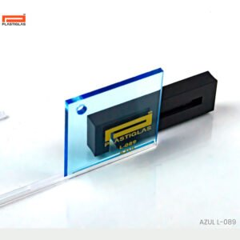

PIENSA EL CORTE ANTES DE COTIZAR
De tus medidas
a un plano visible.
Distribuye piezas rectangulares, compara formatos y prepara una lista de corte. Una herramienta para conversar con el asesor con información concreta.

Cada plano conserva la proporción de las medidas. Distribución heurística: compara alternativas, sin garantizar el mínimo posible de láminas.
ANTES DE PRODUCIRUn buen plano
Un buen plano
merece una revisión técnica.
La separación, el espesor y el formato son datos de trabajo. El cálculo no incorpora tolerancias de máquina, sujeción, zonas inutilizables, dirección del material ni costos.
El equipo de Veypa debe confirmar material, proceso, medidas y precio. No se genera una cotización aprobada.
Conocer servicios oficiales ↗